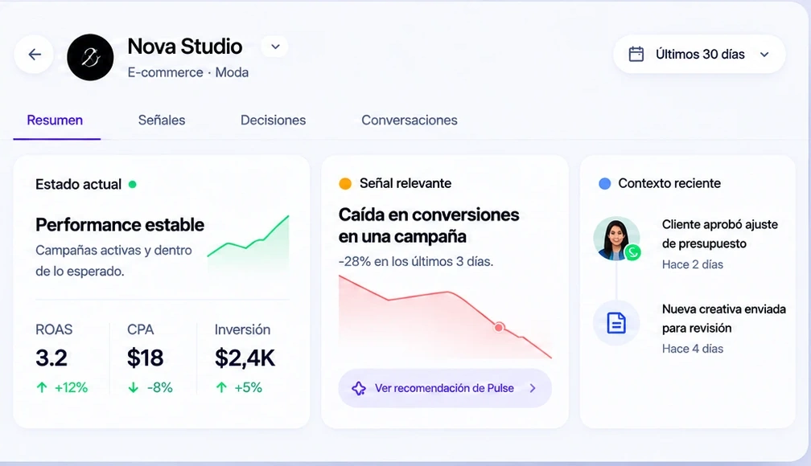
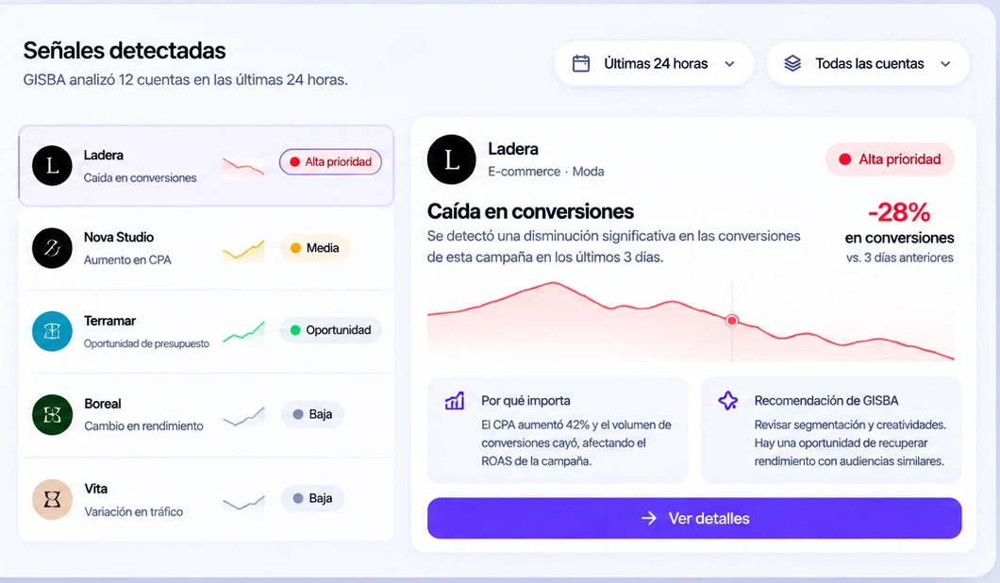
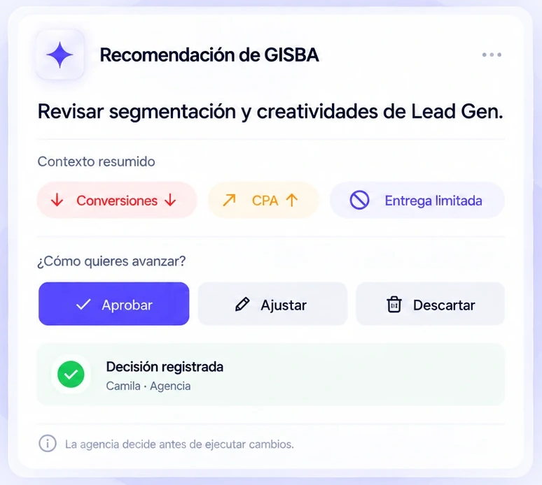
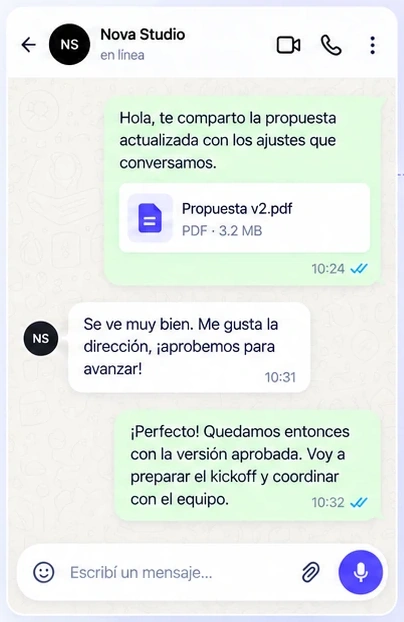

01 · Contexto
Todo parte con el contexto correcto.
GISBA reúne señales, métricas y decisiones recientes de cada cuenta para que tu equipo entienda qué está pasando antes de actuar.

02 · Detecta
No revises todo. Empieza por lo que importa.
GISBA Pulse analiza tus cuentas, prioriza las señales relevantes y te muestra qué cambió, por qué importa y qué conviene hacer.

03Decide
Tu equipo decide con contexto.
GISBA presenta una recomendación y el contexto necesario para que tu agencia evalúe cómo avanzar.
- Contexto claro para decidir
- Aprobar, ajustar o descartar
- Decisión registrada en la cuenta

04 · Coordina
Avanza con tu cliente
sin perder el hilo.
Coordina con tu cliente por WhatsApp mientras GISBA mantiene la conversación, las decisiones y el siguiente paso vinculados al contexto de la cuenta.

- Conversación vinculadaConversación de WhatsApp vinculada al contexto de la cuenta
- Decisión registradaEl cliente aprueba avanzar con la propuesta.
- Siguiente pasoPreparar kickoff y coordinar implementación.
05 · Registra
La próxima decisión no empieza desde cero.
Cada señal, decisión y conversación queda vinculada al contexto de la cuenta para que tu equipo sepa qué ocurrió, qué se decidió y qué pasó después.
- Señal detectada por GISBACaída en conversiones en campañas de Lead Gen.
Se detecta una disminución en conversiones vs. período anterior.
- Recomendación de GISBARevisar segmentación y creatividades.
GISBA sugiere ajustar la audiencia y probar nuevas creatividades.
- Decisión de la agenciaSe aprueba avanzar con la propuesta.
Camila · Agencia
- Respuesta del clienteEl cliente aprueba los ajustes.
Ladera · Cliente
- Resultado posterior registradoEl rendimiento posterior queda vinculado a la decisión.
Se registra la evolución de la cuenta después de los ajustes.
Lleva este flujo a tus propias cuentas.
Descubre cómo GISBA puede conectar señales, decisiones y coordinación en la operación de tu agencia.
Agenda una demo